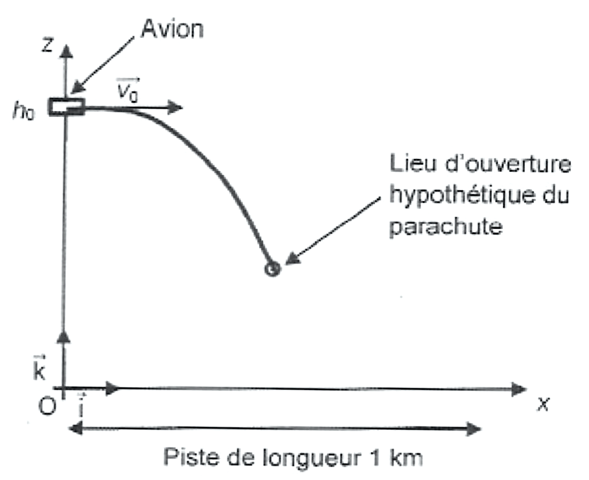
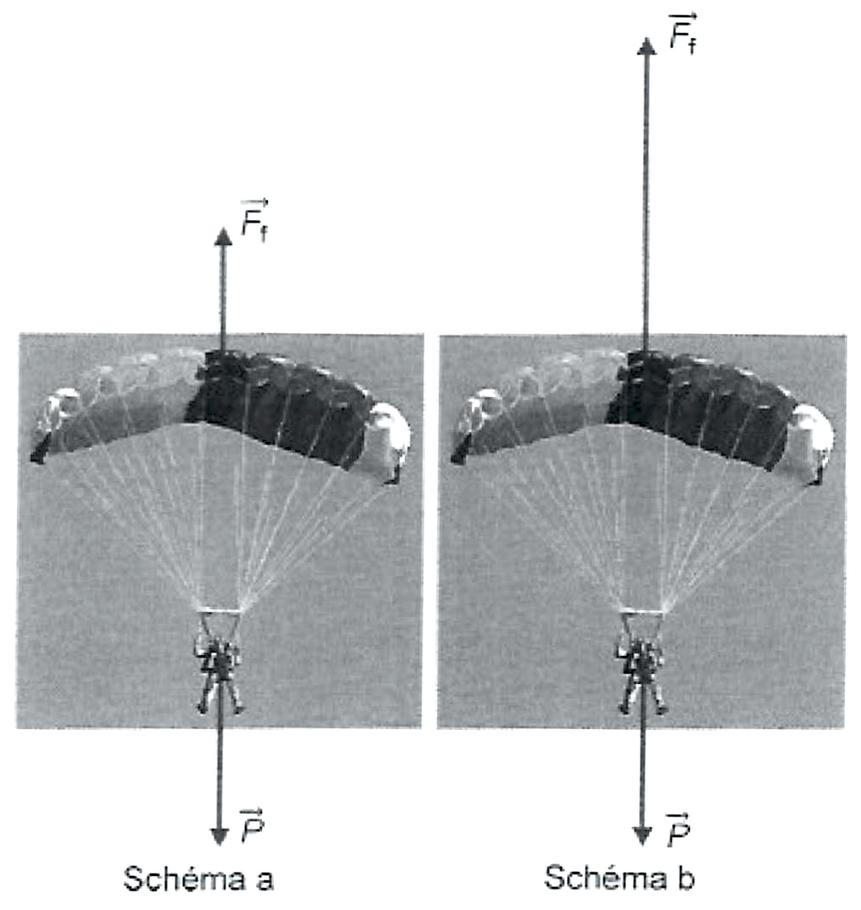

Le jour d’un baptême de saut en parachute, le moniteur indique les consignes à respecter pendant le saut en tandem1 et donne l’équipement nécessaire. Un caméraman est présent tout au long de la journée pour filmer les réactions des participants avant, pendant et après le saut.
Arrivé à l’altitude du saut, le pilote met l’avion à l’horizontale, réduit sa vitesse et la fixe à environ $\pu{120 km.h-1}$. Le moniteur ouvre la porte, le tandem s’élance hors de l’avion et le saut débute. Environ 50 secondes de chute précèdent l’ouverture du parachute. Très vite, la vitesse verticale maximale est atteinte : environ $\pu{200 km.h-1}$. Quand le parachute s’ouvre, à $\pu{1500 m}$ d’altitude, la descente « sous voile » (parachute ouvert) commence et dure 5 à 10 minutes.
L’objectif de cet exercice est d’étudier différentes phases du saut en parachute à l’aide de données expérimentales et de modèles.
- Données
-
-
rayon de la Terre : $R_T = \pu{6,37e6 m}$ ;
-
valeur du champ de pesanteur terrestre au niveau du sol : $g_0 = \pu{9,81 m.s-2}$ ;
-
masse du tandem avec son équipement : $m = \pu{200 kg}$.
-
Étude expérimentale du saut
Lors de son saut, un parachutiste a enregistré, à l’aide de sa montre connectée, l’altitude $z$ au cours du temps $t$. L’enregistrement des données a débuté dès son entrée dans l’avion, sur la piste de décollage. À son retour, il réalise le graphique suivant en prenant comme origine des temps le début du saut.

Figure 1
Les données recueillies ont été utilisées pour modéliser les équations horaires $z(t)$ correspondant aux phases 1, 2, 3 et 4 du saut identifiées sur la figure 1.
-
Recopier et compléter le tableau ci-dessous en justifiant brièvement l’affectation des équations horaires aux différentes phases :
-
$z_a = - 50\, t + \pu{4,0e3}$ ;
-
$z_b (t) = - \pu{4,2}\, t + \pu{1,75e3}$ ;
-
$z_c (t) = \pu{6,1}\, t + \pu{4,6e3}$ ;
-
$z_d (t) = \pu{4,0e3}$
avec $t$ en seconde, $z$ en mètre et l’origine $z = 0$ prise au niveau du sol.
-
| Phase | Équation horaire $z (t)$ |
|---|---|
| 1 | |
| 2 | |
| 3 | |
| 4 |
- Montrer que la valeur de la vitesse maximale verticale citée dans l’introduction est compatible avec les données enregistrées par la montre connectée.
Étude de la phase 3 du saut
On souhaite étudier l’influence de l’altitude $z$ sur la valeur du champ de pesanteur $g$. On considère le critère suivant : la valeur $g (z)$ reste constante si elle diffère de moins de 1 % de sa valeur au niveau du sol. L’expression de la valeur du champ de pesanteur $g (z)$ en fonction de l’altitude $z$ est la suivante : $$g (z) = g_0\, (1 - \dfrac{2 z}{R_T}) \text{ si } z \ll R_T$$
- Peut-on considérer la valeur du champ de pesanteur comme constante et égale à $g_0$ tout au long du saut ? Justifier.
On étudie, dans le référentiel terrestre supposé galiléen, le mouvement du système {tandem} de masse $m$ au cours de sa chute dans le cadre du modèle de la chute libre. Ce mouvement est étudié dans un repère $(O ; \vec{i}, \vec{k})$. L’origine $O$ du repère est placée au niveau du sol à la verticale de l’avion au moment du saut. Le plan de vol prévoit que le tandem soit largué de l’avion à une altitude $h_0$. La piste d’atterrissage a une longueur de $\pu{1 km}$ et débute en $O$. Le tandem quitte l’avion avec une vitesse initiale de norme $v_0$ ; le vecteur $\vec{v_0}$ est horizontal.
On prend $v_0 = \pu{33 m.s-1}$ et $h_0 = \pu{4000 m}$.

Figure 2
-
Montrer que les coordonnées du vecteur accélération du système dans le repère $(O ; \vec{i}, \vec{k})$ sont : $$a_x (t) = 0 \qquad \text{et} \qquad a_z (t) = - g_0$$
-
Établir que les équations horaires du mouvement du système s’écrivent : $$x (t) = v_0\, t \qquad \text{et} \qquad z (t) = - g_0\, \dfrac{t^2}{2} + h_0$$
-
En déduire que l’équation de la trajectoire $z (x)$ s’écrit : $$z (x) = - g_0\, \dfrac{x^2}{2 v_0^2} + h_0$$
-
Le tandem ouvre son parachute à l’altitude $z = \pu{1500 m}$. Montrer que, dans le cadre de ce modèle, cette ouverture s’effectue au-dessus de la piste.
-
Dans le cadre de ce modèle, calculer la valeur de la durée de la phase 3 et la comparer à celle déduite du graphique (figure 1). Conclure sur la pertinence du modèle de la chute libre utilisé dans cette étude.
Étude de la phase 4 du saut
Lors de la descente parachute ouvert, le moniteur guide le parachute de manière à maintenir une trajectoire verticale. La force $\vec{F_f}$ modélise l’action de l’air sur le système {tandem}.
-
Associer chacun des schémas (réalisés sans souci d’échelle) à un instant de la chute :
-
juste après l’ouverture ;
-
quelques secondes après l’ouverture.
Justifier la réponse à partir des données expérimentales de la partie 1.
-

Figure 3
Quelques secondes après l’ouverture du parachute, la chute du tandem se fait à vitesse constante. On étudie alors le mouvement dans ces conditions.
-
Estimer la valeur de la vitesse verticale du tandem à partir des données expérimentales de la partie 1.
-
Déterminer la valeur, notée $F_f$, de la norme de la force $\vec{F_f}$ qui modélise l’action de l’air sur le système {tandem}.
-
L’expression de $F_f$ est donnée par la relation $F_f = k\, v_z^2$, où $k$ est une constante de l’étude et $v_z$ désigne la coordonnée selon l’axe $(Oz)$ de la vitesse du parachutiste. Montrer que la valeur de la constante $k$ est de $\pu{1,1e2 S.I}$.
Préciser l’unité de la constante $k$. -
Calculer la valeur de l’énergie cinétique du tandem avant l’arrivée au sol.
-
Le tandem possède un parachute de secours plus petit que le parachute principal. On admet que la valeur de la constante $k_s$ de la force de frottement exercée par ce parachute vérifie la relation : $k_s = \dfrac{k}{2}$. Dans le cas où ce parachute de secours est utilisé, déterminer la valeur de la vitesse verticale $v_{z s}$ ainsi que celle de l’énergie cinétique du tandem avant l’arrivée au sol.
Commenter.
-
tandem : deux personnes associées. ↩︎